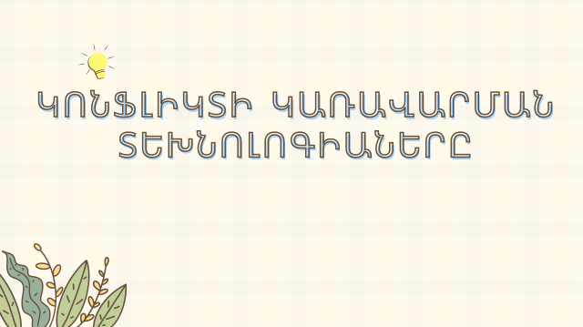
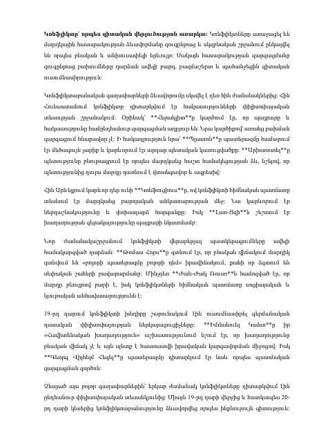
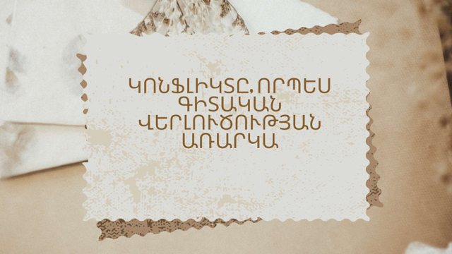

Համալսարանական դասընթաց
Կոնֆլիկտաբանության թեմաներ
Բոլոր նյութերը հավաքված են մեկ վայրում․ բացեք թեման դիտելու համար կամ ներբեռնեք PDF-ը հեռախոսում։
Դիտել նյութերը




_compressed.pdf.png)
Այս որոնմամբ նյութեր չեն գտնվել։